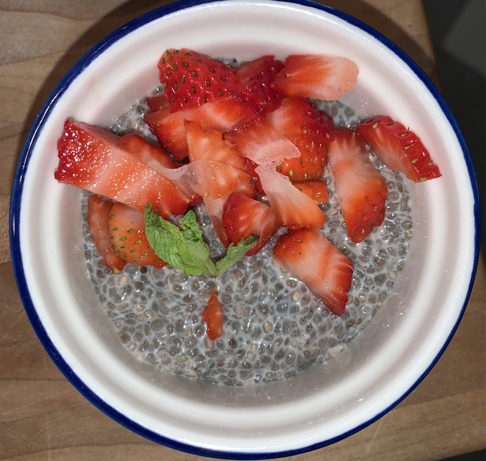

Once you're done baking head back to my main website and look at some other things I've been working on!
My friend and I have been making a lot of food while in quarantine. You can learn a little about us and our favorite recipes, including the chia seed pudding, when you download the book attached below!
You can download your own orange flyer here!